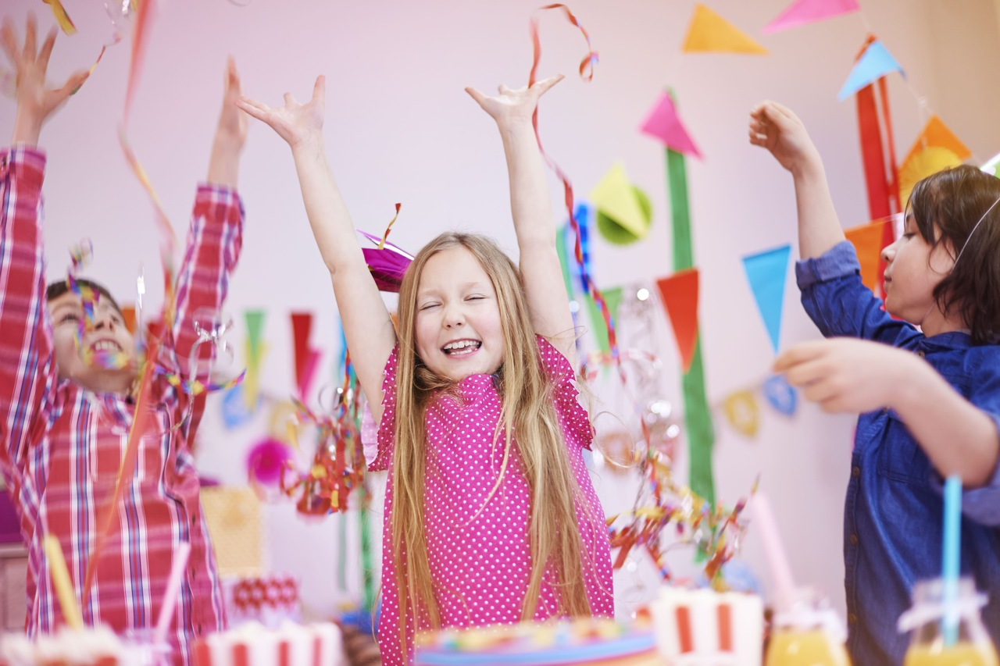

Desvendando os Segredos de uma Festa de Crianças Inesquecível

Introdução:
As festas de crianças são momentos mágicos que ficam marcados na memória não apenas dos pequenos, mas também dos pais e familiares. Por trás de cada risada, cada brincadeira e cada pedaço de bolo há um universo de planejamento e criatividade. Neste artigo, exploraremos os segredos para criar uma festa infantil verdadeiramente inesquecível, repleta de diversão, alegria e momentos que serão lembrados por muitos anos.
1. Tema Criativo:
Escolher um tema cativante é o primeiro passo para uma festa de sucesso. Desde os clássicos como princesas e super-heróis até temas mais específicos como uma viagem ao espaço sideral ou uma aventura na selva, a escolha do tema define o tom de toda a celebração. O segredo está em personalizar os detalhes de acordo com o tema escolhido, desde os convites até a decoração e o bolo.
2. Decoração Encantadora:
A decoração é o que transforma o espaço da festa em um mundo mágico para as crianças. Balões coloridos, painéis temáticos, toalhas de mesa decoradas e enfeites criativos são elementos essenciais para criar uma atmosfera festiva. Mesmo com um orçamento limitado, é possível criar uma decoração encantadora com um pouco de imaginação e habilidade manual.
3. Atividades Divertidas:
Uma festa de crianças sem atividades divertidas não é uma festa completa. Jogos, brincadeiras e atividades temáticas mantêm os pequenos entretidos e proporcionam momentos de pura diversão. Desde corridas de saco até oficinas de arte, as opções são infinitas. O importante é garantir que as atividades sejam adequadas à faixa etária dos convidados e que todos possam participar e se divertir.
4. Cardápio Delicioso:
Nenhuma festa está completa sem uma deliciosa seleção de quitutes. Doces coloridos, salgadinhos saborosos e um bolo incrível são indispensáveis em uma festa infantil. Além disso, é importante oferecer opções saudáveis para os pais que desejam alternativas mais equilibradas. Bebidas refrescantes, como sucos naturais e água aromatizada, também são sempre bem-vindas.
5. Lembrancinhas Especiais:
As lembrancinhas são uma forma carinhosa de agradecer aos convidados por participarem da celebração. Elas podem seguir o tema da festa e incluir desde pequenos brinquedos até lembranças personalizadas, como fotos do evento ou objetos artesanais. O importante é que as lembrancinhas sejam úteis e façam os convidados lembrarem com carinho da festa.
E aí, pronto para inovar em 2024?
Uma festa de crianças inesquecível vai muito além da decoração e do bolo. É sobre criar momentos mágicos que serão lembrados com carinho por muitos anos. Com planejamento, criatividade e atenção aos detalhes, é possível transformar qualquer celebração em uma experiência única e memorável para os pequenos e suas famílias. Então, mãos à obra e vamos fazer da próxima festa infantil um verdadeiro sucesso!